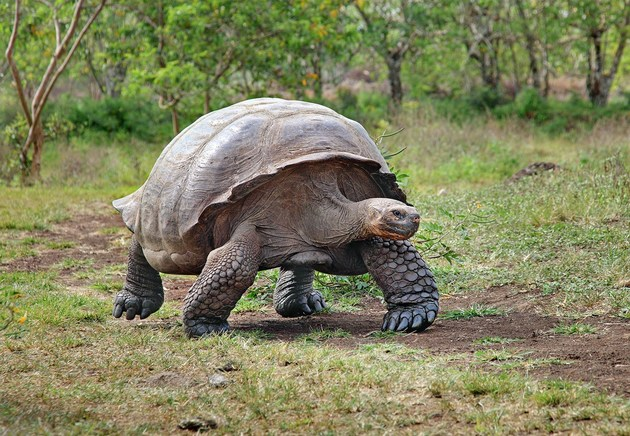

Tartaruga gigante de Galápagos (Chelonoidis niger)

O último exemplar da tartaruga gigante de Galápagos morreu no ano de 2012, onde vivia em cativeiro. Na natureza, a espécie já era considerada extinta há mais de 150 anos.
Os animais desta espécie viviam por mais de 100 anos. Atualmente, pesquisadores do mundo todo realizam estudos para recuperar a espécie a partir da extração do DNA.
Helio Lidoni
Atividade 1 - Responsive Web Development